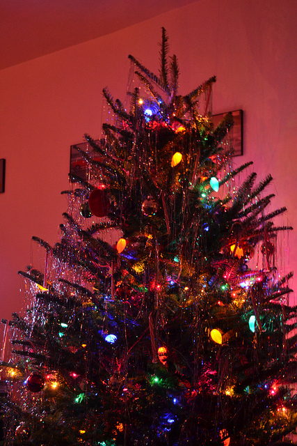
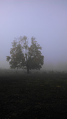

Welcome to the scavenger hunt!
This scavenger hunt exercise is designed to help you learn to write file paths for links and images. All the paths we will write for this path a relative paths. This means they should tell the browser how to get from the current folder (where the html file we are working on is located) to the desired file. To start:
- Open this file in atom to start editing
- Add the image from december of last year below this list. Don't forget alt text!
- Add the small version of the outdoor scene image from last november below that.
- Make the small verison of the outdoor scene image link to its larger version.
- Below the images, create a link reading "Home" which links back to the html file in the scavengerHunt directory by using the .. syntax to go up one level in the relative path. (Don't worry, Andy will explain when everyone is caught up to this step).
- Next to the "Home" link you just created, create a link reading "Site2" and link it to the index page of the site2 directory. This will require using the .. syntax again!
- Follow your new link to the site2 page and follow the instructions there.


Home
Site 2
{kind=link}